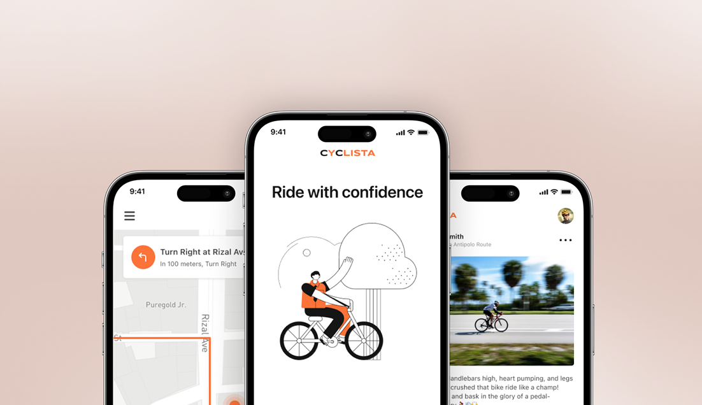

Designing a Simpler and Safer Cycling Experience for Everyday Riders
This is a concept project I initiated to explore how product design can address real-world safety problems for cyclists.

The problem
Cycling apps are built for performance. But for casual riders and daily commuters, the real challenge isn’t tracking speed. It’s feeling safe on unfamiliar roads and knowing help is nearby when something goes wrong.
Most apps help you track a ride but offer nothing when you need roadside help, encounter an accident, or get lost. That gap was the starting point for this project.
I identified two underserved areas:
Accessibility
Most cycling apps have overwhelming interfaces and complex metrics that aren’t useful for casual riders.
Safety
There’s no immediate way to get help during emergencies. Riders rely on external tools or personal contacts, with no real-time support from nearby cyclists.
Understanding the users
I conducted competitive analysis across popular cycling apps and interviewed casual riders and daily commuters to understand their pain points. Two patterns came up repeatedly: riders felt unsupported in unfamiliar areas, and existing apps assumed a level of cycling expertise that most users didn’t have.
These insights shaped three design principles: keep the core experience simple, make safety feel built-in rather than bolted on, and design for trust around location sharing.
Key design decisions
Streamlined core experience
I stripped the interface down to essential actions: start a ride, track progress, and view summaries. Every screen was designed with casual riders in mind, removing unnecessary metrics and focusing on clarity.
Proximity-based SOS system
The core design challenge was making emergency help feel instant without being intrusive. I designed a system where riders can ping nearby cyclists with their location in two taps. The interaction had to be fast enough for real emergencies but intentional enough to prevent false alerts. Nearby cyclists receive a notification and can respond directly within the app, removing the need for external communication tools.
Trust and control
Because this involves user safety and location data, I designed clear controls around visibility. Users choose when they are discoverable by others. SOS is triggered intentionally, not automatically. And every step provides clear feedback so users know exactly when help has been requested and when someone is responding.
Process and iteration
I started with low-fidelity wireframes and ran usability tests during the design sprint to validate the core flows. Key iterations included simplifying the SOS trigger from a three-step process to two taps based on user feedback, and redesigning the notification system for responders after testers found the original version unclear.
I also built a complete design system following atomic design methodology to ensure consistency across all screens and to make the project scalable if taken to development.
Results
While this is a concept project, I validated the designs through prototype testing:
- Users completed the SOS flow in under 5 seconds during testing.
- The streamlined interface tested well with non-cyclists who found existing apps intimidating.
- Usability feedback directly shaped two major iterations to the SOS and notification flows.
Interested in working together?
Shoot me an email if you’d like to chat.
Got a project? Say Hello!
shaznayluna@gmail.comI’m always up for good conversations about product design, complex problems, or new opportunities. Don’t be a stranger.